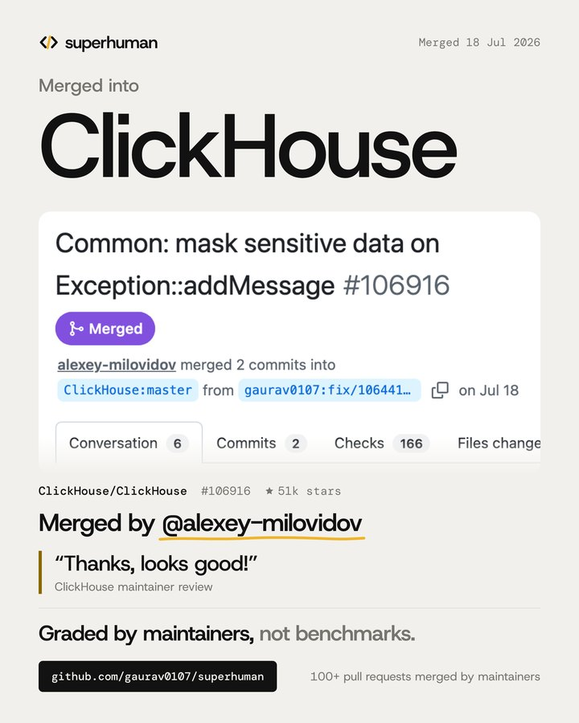
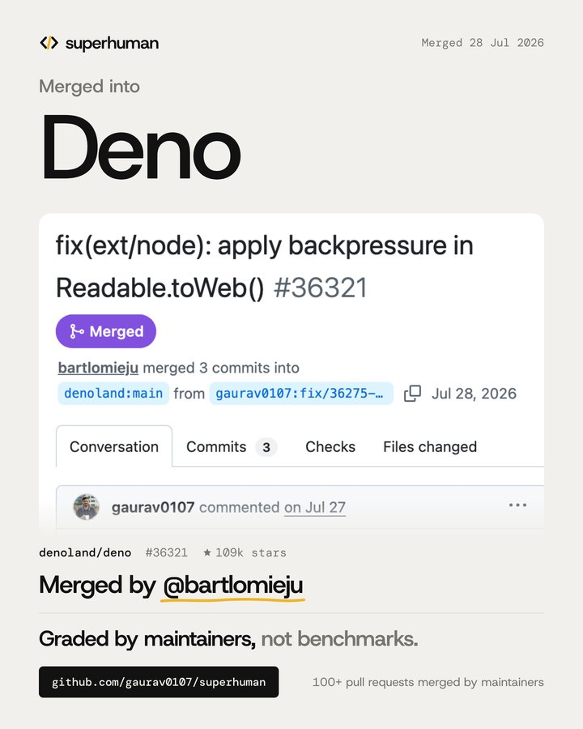

The open-source plugin for Claude Code and Codex
Merged PRs,
while you’re doing something else.
superhuman picks an open issue nobody has claimed, studies how that project works, and opens one pull request. Maintainers do the merging.
121merged into Hugging Face transformers, Deno, ClickHouse and 45 more projectscurl -fsSL https://raw.githubusercontent.com/gaurav0107/superhuman/main/install.sh | bashissue-selector
ranked 14 open issues, skipped 9repo-profiler
read 20 merged PRs for house styleplanner
3 steps, 1 file, tests firstbuilder
tests pass locally, lint cleanscorer
merge probability, target 95%Agent → maintainera real pull request
Common: mask sensitive data on Exception::addMessage
ClickHouse/ClickHouse #106916 · 2 commits · +76 −5
Mergedreal, dates in UTC
Raise clear error for `problem_type="single_label_classification"` with `num_labels=1`huggingface/transformers #45611 · 24 AprMerged proxy: bracket IPv6 literals in upstream CONNECT authoritymitmproxy/mitmproxy #8326 · 17 JulMerged fix(linter/jsx-a11y): no-redundant-roles attribute-aware implicit roles for `<input>`, skip ancestor-conditional elementsoxc-project/oxc #23015 · 11 JunMerged Support optimizing chat-type prompts in `optimize_prompts`mlflow/mlflow #23488 · 12 AugMergedMerged by the maintainers of 48 open-source projects
A fix you want, in a project you use.
Aim it at the bug you hit
/contribute owner/repo 12345 takes an issue in a project you depend on to a pull request its maintainers can merge. Or let it pick one for you.
It learns the house rules first
It reads the project’s last 10–20 merged pull requests and runs the project’s CI commands locally before it asks for a review.
You stay responsible for it
The pull request opens from your fork, under your name. By default it says it was opened with superhuman. Free and MIT.
How it works
1 of 3
It picks
the issue
It ranks the open issues, filters out ones marked docs-only, taken ones and anything under a day old, and reads the last 10–20 merged pull requests to learn the house style.
2 of 3
It opens the
pull request
One small change in the project’s own commit style, with tests where the project expects them. It opens a draft, scores it on a 10-dimension rubric, and marks it ready for review once the score reaches 80%.
3 of 3
Maintainers
merge it
It answers review comments that arrive while it is running. Later ones are yours: /contribution-sweep lists the pull requests waiting on you. The decision to merge stays with the people who run the project.
Respect for maintainers.
A maintainer’s review time is the scarce resource. superhuman is built to spend as little of it as it can.
Disclosure is on by default
By default, the pull request body says it was opened with superhuman.
It scores its own work
The pull request starts as a draft. It is marked ready for review only after it scores 80% on a 10-dimension rubric.
It leaves taken work alone
It skips issues someone has already taken, and filters out issues marked docs-only.
It pushes only to your fork
It pushes with --force-with-lease, to your fork only, and runs the project’s CI commands locally from an allowlist.
Don’t trust the agent. Trust the merge.
Each of these is a real pull request, reviewed and merged by that project’s maintainers. Open any of them and read the review.


- google-gemini/gemini-cli#25822fix(cli): add missing response key to custom theme text schema
- Lightning-AI/pytorch-lightning#21686Fix torch.compile breaking toggle_optimizer / untoggle_optimizer
- go-gitea/gitea#38479fix(packages): serve noarch Alpine index for any requested architecture
- ant-design/ant-design#58241fix(Descriptions): apply labelStyle/contentStyle to bordered cells
- mem0ai/mem0#5202fix(vector_stores): pass namespace as top-level kwarg to UpstashVector query_many
One command. Then walk away.
Claude Code
Codex
Needs gh (authenticated), git, jq and python3. The installer also adds two plugins superhuman builds on: superpowers (required) and everything-claude-code (recommended; --skip-ecc leaves it out). Read install.sh first, or run it with --dry-run to see what it would do.
superhuman sends opt-out usage telemetry: three small events keyed by your GitHub username, and nothing about your repositories or code. What is sent, and how to turn it off. MIT licensed.
Installed. Now put it to work.
In Claude Code, these are slash commands. Type one and walk away. The agent team takes it from there.
-
1
Find repos worth contributing to
Builds a ranked shortlist of repositories and the best open issue in each. Optional:
/contributewill pick for you if you skip it./repo-finder -
2
Make one contribution
Picks the top repo and issue, then runs the full loop to a merge-ready PR. Aim it yourself with
/contribute owner/repoor/contribute owner/repo 12345./contribute -
3
Run several, unattended
Several contributions in one run.
/contribute-loopworks through them one after another,/contribution-fleetruns them in parallel across different repos./contribute-loop 5/contribution-fleet 3 -
4
Watch it work
A report of the active run, its score history, and recent merge outcomes.
/contribution-dashboard -
5
Come back later
Records which pull requests were merged or closed, and lists the open ones that need you: changes requested, a merge conflict, failing CI. Answering those reviews is yours.
/contribution-sweep
On OpenAI Codex there are no slash commands. Tell Codex “use the superhuman skill to contribute.”
Questions, before you walk away.
What is superhuman?
Is it safe, or will it spam maintainers with low-quality PRs?
--force-with-lease, runs only allowlisted CI commands, and is MIT-licensed and fully auditable.Whose name is on the pull request?
Is it free? What does it cost to run?
How is it different from other coding agents?
Does it work with OpenAI Codex, or only Claude Code?
curl -fsSL https://raw.githubusercontent.com/gaurav0107/superhuman/main/install.sh | bash) sets up superhuman and its dependencies for Claude Code. Add -s -- --codex to also link the skill into Codex, then tell Codex to "use the superhuman skill to contribute."What do I need to get started?
gh (authenticated), git, jq and python3. The command is in the Install section above.